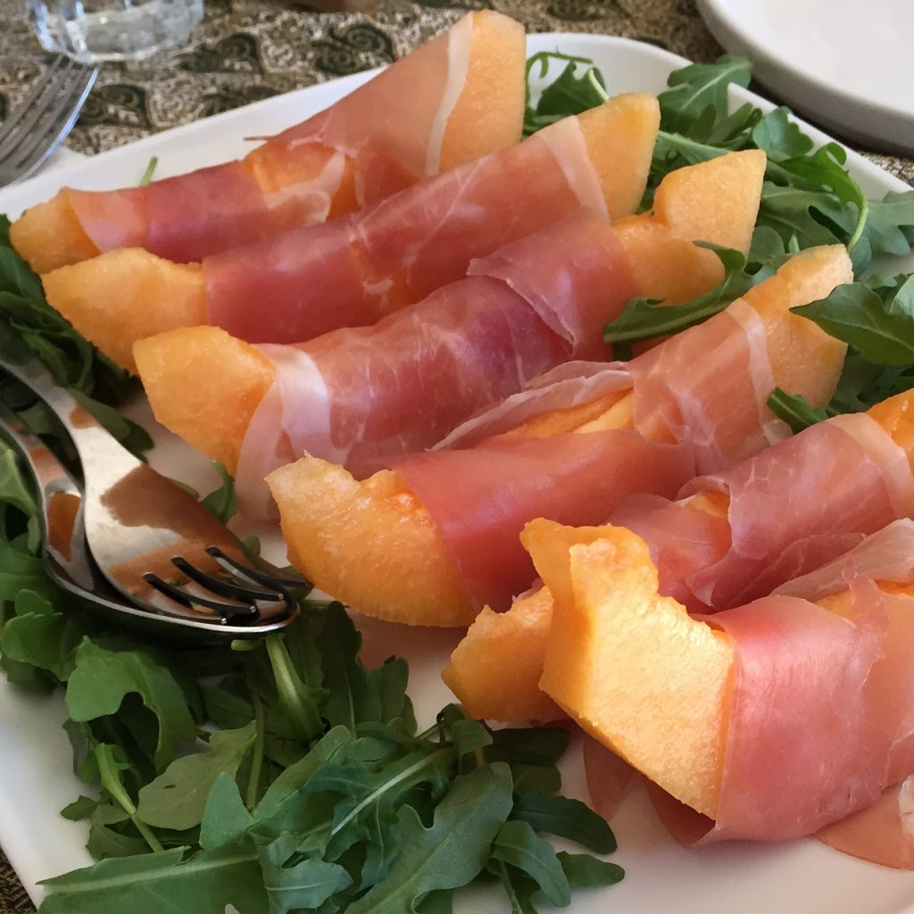

Prosciutto crudo e melone (air-cured ham with cantaloupe)
Tuscan bruschette
Spiedini di mortadella, pomodorini e cetriolini (skewers of mortadella, cherry tomatoes and pickles)
{This is an excerpt from chapter 3 “Italian cuisine” of the eBook “Italy from the Inside. A native Italian reveals the secrets of traveling in Italy”. To buy our eBook click here}